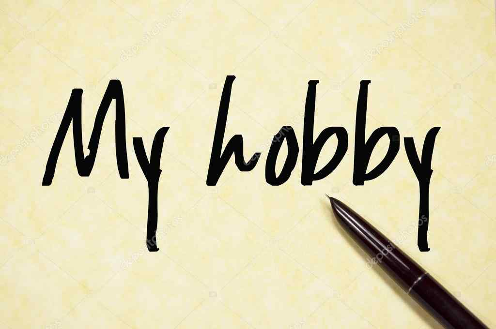

My Favourite Hobby
chess
Chess. I play chess in my free time because it is my hobby and passion. There are a number of hobbies to choose from but I find chess the best and most fascinating.
For me there cannot be a better pursuit than playing chess in my spare time. It not only keeps me busy but also gives entertainment, provides a welcome change and creative satisfaction. However, it is never an obsession with me. It best suits my aptitude and liking.